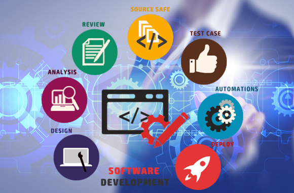
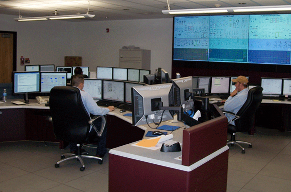
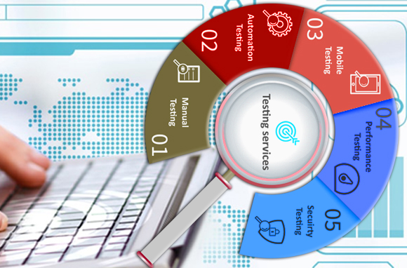

IT Management Consulting
As advancements in IT infrastructure accelerate, it is critical that your IT systems are aligned with your business needs. We’re committed to meeting this need by helping you make informed decisions across the lifecycle of infrastructure services delivery.Companies around the world rely on our strategic thought leadership, rigor and consulting discipline for evaluating and planning infrastructure technology and service.
Offerings –
IT Asset and Financial ManagementWe help companies reduce and control IT equipment costs dramatically. Through standardization, proper documentation and loss detection, you can mitigate risk, improve your inventory control, and support strategic decision-making.
IT Governance
IT governance is a critical component in improving IT management. It covers risk management as well as heightened accountability in decision-making.
With Cognizant, your governance will link IT more closely to corporate strategy by ensuring that IT investments generate business value.
IT Service Management
Service management ensures that IT aligns with your business requirements and that the right applications are available and meeting user needs. Using our process-driven approach, you can detect and resolve problems proactively. Our services consistently reduce incident volume by an average of 10%, and slash downtime of critical services by as much as 50%.
Software Product Engineering
Mobile, Cloud and Social are converging and accelerating one another to give rise to what RyHiLL calls CONSTANT ACCESS paradigm consisting of1.Continuous Services :solutions will increasingly need to be cloud-based to ensure they are always available on-demand and can be consumed on demand.
2.Connected Devices :proliferation of the number and types of devices that allows users to be continuously or intermittently connected to the internet and with one another.
The adoption of this paradigm will be accelerated by the gradual blending of Consumer technologies into the Enterprise or consumerization of IT. This is giving rise to a new breed of software product companies while at the same time placing new demands on existing ISVs. ISVs will need to grapple with what solutions need to be moved to the cloud and how, allowing users access on multiple devices without compromising on user experience or security or continuity, build social aspects into the product/service architecture while incorporating new technologies. These products and services will need to be developed in an Agile mode to ensure that immediate customer feedback and requirements take precedence, to demonstrate constant improvement and retain flexibility in a fast changing world.
To succeed in this new world, while meeting time to market goals, budget constraints and talent shortage, ISVs need a Product Engineering Services partner with singular focus, deep understanding of the shifting technologies and willingness to work as an invested partner.
RyHiLL with a singular focus on Mobile, Cloud and Social technologies can help you build the products of the future. Unlike other service providers, unencumbered by past investments or legacy skills, RyHiLL is building a company that only focuses deep on a few emerging technologies and is making the investments in people and accelerators that will help you constantly innovate and succeed.
To succeed in this new world, while meeting time to market goals, budget constraints and talent shortage, ISVs need a Product Engineering Services partner with singular focus, deep understanding of the shifting technologies and willingness to work as an invested partner.
RyHiLL with a singular focus on Mobile, Cloud and Social technologies can help you build the products of the future. Unlike other service providers, unencumbered by past investments or legacy skills, RyHiLL is building a company that only focuses deep on a few emerging technologies and is making the investments in people and accelerators that will help you constantly innovate and succeed.

Infrastructure Management & Security
Our secure infrastructure solutions help manage IT risks at all levels of an organization. We begin with clear business goals. We then develop compliance roadmaps and risk assessments to identify true costs of exposure and controls. We help produce more secure and resilient infrastructures by creating and deploying plans that prepare business for outages or disasters. Our infrastructure security services help reduce and manage your IT risk. With a focus on planning, we apply industry best practices to protect your information from security breaches today and tomorrow.Offerings –
Disaster Recovery/Business Continuity PlanningWe identify your organization’s exposure to internal and external threats and help you prepare for recovery of technology infrastructure during an outage or disaster.
Infrastructure Risk Assessment
We identify, assess and prioritize risks to your infrastructure and provide suitable solutions to manage them.
Infrastructure Security Architecture
This service creates the design artefacts that detail the function of security controls.
Infrastructure Security Planning
This service area includes security planning involving the development of security policies and the identification of precise security specifications.
Engineering R&D Services
Today, the way we do things is completely reliant on Standalone Embedded system delivered through products from consumer electronics, communication, storage, automotive, medicine and telecom industries. With an increasingly interconnected world, it is imperative to create innovative designs that are of high quality and meet exacting demands of global users. This requires an approach that interprets user demands correctly and possesses the right technology expertise – both embedded as well as disruptive technologies which enable devices to be context aware, smart and accessible.At RyHiLL, we offer solutions that exactly meet these changing market and technology demands. Our R&D Business focuses on enabling our customers to stay well ahead of the technology curve in a connected world.
We are closely involved in every phase in the product development cycle life – from conceptualization, architecting and design implementation, Integration, validation, support and managed services. Our all-encompassing expertise spans across multiple industries and includes system design, firmware, software, management and applications.
With a strong focus on disruptive technologies in the areas of cloud, mobility, analytics, social and unified communications, we help our customers innovate in a new era, and enable devices to be well connected, seamlessly managed and highly applied to meet the demand of the end users.
Our core areas of focus in the above domains will revolve around M2M, Internet of Things, Connected Cars, Home Networking, Enterprise/ Carrier / Data Center Infrastructure, SDN and Storage and Server Virtualization in Cloud and Data Centers, Storage on Cloud Technologies.
The RyHiLL Edge
The RyHiLL Edge
- Strong focus on disruptive technologies to get the best use of connected and smart devices.
- Strong eco-system of alliances and partners.
- Range of solution accelerators.
- Lower development costs & shorter product lifecycles.
- Access to solutions that focus on next-generation technologies.
- Well Governed delivery processes.
- Value added services like analytics, mobility approach and cloud approach.
- Dedicated NOC/SOC for customers who require Managed services or technical support after product releases.

Testing Services
Organizations are looking for new ways to curtail testing costs while increasing testing scalability. This is especially true when companies can spend as much as 10% to 12%t of the annual IT budget fixing core application problems. We think differently about application testing—more innovatively and holistically. Instead of testing for quality at the end, we focus on it throughout the application development life cycle.To maximize our client's cost reductions, we combine this industrialized focus on quality with productivity improvements and flexible sourcing. Our testing professionals define themselves as stewards of end-to-end quality, delivering testing productivity at a cost-effective price. We demonstrate this commitment by conducting quality assurance activities in each phase of the application development life cycle—from plan, analyze and design to build, test and deploy.
We deliver cost reductions and scalability improvements—and go one step further. We work to improve testing productivity through automation and industrialization, while also emphasizing a holistic, end-to-end quality strategy to drive quality throughout the application development life cycle. Combined with our offshore testing services and flexible sourcing model, our approach can reduce the cost of poor quality to less than 5% of IT spends
Assists clients with end-to-end testing and quality assessment process, from planning through final recommendations.
Testing Automation
A robust set of tools and assets to consistently support the entire spectrum of automation-related testing activities.
Performance Testing
A wide range of strategic and tactical performance test services.
Testing Center of Excellence
We implement and operate a “Testing Center of Excellence” for clients, either at the enterprise level or within specific business units.
Offerings –
Testing Strategy & AssessmentAssists clients with end-to-end testing and quality assessment process, from planning through final recommendations.
Testing Automation
A robust set of tools and assets to consistently support the entire spectrum of automation-related testing activities.
Performance Testing
A wide range of strategic and tactical performance test services.
Testing Center of Excellence
We implement and operate a “Testing Center of Excellence” for clients, either at the enterprise level or within specific business units.
